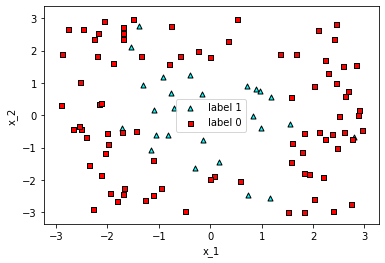
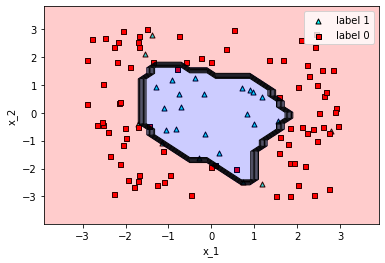

A graphical example#
import pandas as pd
import numpy as np
import matplotlib.pyplot as plt
from tensorflow import keras
import utils
# Setting random seeds to get reproducible results
np.random.seed(0)
import tensorflow as tf
tf.random.set_seed(1)
Loading the dataset#
# Loading the one_circle dataset
df = pd.read_csv('one_circle.csv', index_col=0)
x = np.array(df[['x_1', 'x_2']])
y = np.array(df['y']).astype(int)
utils.plot_points(x,y)

df
| x_1 | x_2 | y | |
|---|---|---|---|
| 0 | -0.759416 | 2.753240 | 0 |
| 1 | -1.885278 | 1.629527 | 0 |
| 2 | 2.463302 | -1.023869 | 0 |
| 3 | -1.986004 | -0.898810 | 0 |
| 4 | 2.010834 | -2.580117 | 0 |
| ... | ... | ... | ... |
| 105 | -1.376637 | 2.778703 | 1 |
| 106 | -0.703722 | 0.215382 | 1 |
| 107 | 0.729767 | -2.479655 | 1 |
| 108 | -1.715920 | -0.393404 | 1 |
| 109 | 2.382873 | -2.951074 | 0 |
110 rows × 3 columns
x[:10]
array([[-0.759416 , 2.7532401 ],
[-1.8852779 , 1.62952654],
[ 2.46330243, -1.02386888],
[-1.98600415, -0.89880979],
[ 2.01083403, -2.58011745],
[ 2.41018752, 2.37050087],
[ 1.59914005, -0.86273162],
[-1.10985644, -2.46969746],
[ 2.4473419 , 2.81117994],
[-1.69773161, 2.53984757]])
y[:10]
array([0, 0, 0, 0, 0, 0, 0, 0, 0, 0])
Preprocessing the data#
# Categorizing the output
from tensorflow.keras.utils import to_categorical
categorized_y = np.array(to_categorical(y, 2))
categorized_y
array([[1., 0.],
[1., 0.],
[1., 0.],
[1., 0.],
[1., 0.],
[1., 0.],
[1., 0.],
[1., 0.],
[1., 0.],
[1., 0.],
[1., 0.],
[0., 1.],
[1., 0.],
[1., 0.],
[1., 0.],
[1., 0.],
[1., 0.],
[1., 0.],
[1., 0.],
[1., 0.],
[1., 0.],
[1., 0.],
[1., 0.],
[0., 1.],
[1., 0.],
[0., 1.],
[1., 0.],
[1., 0.],
[1., 0.],
[1., 0.],
[1., 0.],
[1., 0.],
[1., 0.],
[0., 1.],
[0., 1.],
[1., 0.],
[0., 1.],
[1., 0.],
[1., 0.],
[0., 1.],
[1., 0.],
[1., 0.],
[1., 0.],
[1., 0.],
[1., 0.],
[1., 0.],
[1., 0.],
[1., 0.],
[1., 0.],
[0., 1.],
[1., 0.],
[1., 0.],
[1., 0.],
[1., 0.],
[1., 0.],
[1., 0.],
[1., 0.],
[1., 0.],
[1., 0.],
[0., 1.],
[1., 0.],
[0., 1.],
[1., 0.],
[0., 1.],
[1., 0.],
[1., 0.],
[1., 0.],
[1., 0.],
[1., 0.],
[1., 0.],
[1., 0.],
[1., 0.],
[1., 0.],
[1., 0.],
[1., 0.],
[1., 0.],
[1., 0.],
[0., 1.],
[1., 0.],
[1., 0.],
[1., 0.],
[1., 0.],
[1., 0.],
[1., 0.],
[1., 0.],
[1., 0.],
[1., 0.],
[0., 1.],
[0., 1.],
[1., 0.],
[1., 0.],
[1., 0.],
[1., 0.],
[0., 1.],
[0., 1.],
[0., 1.],
[1., 0.],
[0., 1.],
[1., 0.],
[1., 0.],
[0., 1.],
[0., 1.],
[0., 1.],
[0., 1.],
[1., 0.],
[0., 1.],
[0., 1.],
[0., 1.],
[0., 1.],
[1., 0.]], dtype=float32)
Building and compiling the neural network#
# Imports
#import numpy as np
from tensorflow.keras.models import Sequential
from tensorflow.keras.layers import Dense, Dropout
#from tensorflow.keras.layers import Dense, Dropout, Activation
#from tensorflow.keras.optimizers import SGD
# Building the model
model = Sequential()
model.add(Dense(128, activation='relu', input_shape=(2,)))
model.add(Dropout(.2))
model.add(Dense(64, activation='relu'))
model.add(Dropout(.2))
model.add(Dense(2, activation='softmax'))
# Compiling the model
model.compile(loss = 'categorical_crossentropy', optimizer='adam', metrics=['accuracy'])
model.summary()
Model: "sequential_5"
_________________________________________________________________
Layer (type) Output Shape Param #
=================================================================
dense_15 (Dense) (None, 128) 384
_________________________________________________________________
dropout_10 (Dropout) (None, 128) 0
_________________________________________________________________
dense_16 (Dense) (None, 64) 8256
_________________________________________________________________
dropout_11 (Dropout) (None, 64) 0
_________________________________________________________________
dense_17 (Dense) (None, 2) 130
=================================================================
Total params: 8,770
Trainable params: 8,770
Non-trainable params: 0
_________________________________________________________________
Training the neural network#
# Training the model
model.fit(x, categorized_y, epochs=100, batch_size=10)
Epoch 1/100
11/11 [==============================] - 0s 1ms/step - loss: 0.5473 - accuracy: 0.7182
Epoch 2/100
11/11 [==============================] - 0s 2ms/step - loss: 0.4621 - accuracy: 0.7636
Epoch 3/100
11/11 [==============================] - 0s 2ms/step - loss: 0.4521 - accuracy: 0.7636
Epoch 4/100
11/11 [==============================] - 0s 3ms/step - loss: 0.4379 - accuracy: 0.7636
Epoch 5/100
11/11 [==============================] - 0s 2ms/step - loss: 0.4411 - accuracy: 0.7636
Epoch 6/100
11/11 [==============================] - 0s 2ms/step - loss: 0.4207 - accuracy: 0.7636
Epoch 7/100
11/11 [==============================] - 0s 2ms/step - loss: 0.4428 - accuracy: 0.7636
Epoch 8/100
11/11 [==============================] - 0s 3ms/step - loss: 0.4345 - accuracy: 0.7636
Epoch 9/100
11/11 [==============================] - 0s 2ms/step - loss: 0.4311 - accuracy: 0.7636
Epoch 10/100
11/11 [==============================] - 0s 3ms/step - loss: 0.4182 - accuracy: 0.7636
Epoch 11/100
11/11 [==============================] - 0s 2ms/step - loss: 0.4099 - accuracy: 0.7636
Epoch 12/100
11/11 [==============================] - 0s 2ms/step - loss: 0.3991 - accuracy: 0.7636
Epoch 13/100
11/11 [==============================] - 0s 2ms/step - loss: 0.4048 - accuracy: 0.7636
Epoch 14/100
11/11 [==============================] - 0s 2ms/step - loss: 0.4144 - accuracy: 0.7636
Epoch 15/100
11/11 [==============================] - 0s 3ms/step - loss: 0.3885 - accuracy: 0.7727
Epoch 16/100
11/11 [==============================] - 0s 2ms/step - loss: 0.3942 - accuracy: 0.7818
Epoch 17/100
11/11 [==============================] - 0s 2ms/step - loss: 0.3835 - accuracy: 0.7818
Epoch 18/100
11/11 [==============================] - 0s 2ms/step - loss: 0.3834 - accuracy: 0.7909
Epoch 19/100
11/11 [==============================] - 0s 2ms/step - loss: 0.3845 - accuracy: 0.8000
Epoch 20/100
11/11 [==============================] - 0s 2ms/step - loss: 0.3775 - accuracy: 0.8091
Epoch 21/100
11/11 [==============================] - 0s 2ms/step - loss: 0.3699 - accuracy: 0.8000
Epoch 22/100
11/11 [==============================] - 0s 2ms/step - loss: 0.3533 - accuracy: 0.8182
Epoch 23/100
11/11 [==============================] - 0s 2ms/step - loss: 0.3696 - accuracy: 0.8091
Epoch 24/100
11/11 [==============================] - 0s 2ms/step - loss: 0.3713 - accuracy: 0.8364
Epoch 25/100
11/11 [==============================] - 0s 2ms/step - loss: 0.3525 - accuracy: 0.8182
Epoch 26/100
11/11 [==============================] - 0s 3ms/step - loss: 0.3361 - accuracy: 0.8636
Epoch 27/100
11/11 [==============================] - 0s 3ms/step - loss: 0.3723 - accuracy: 0.8455
Epoch 28/100
11/11 [==============================] - 0s 3ms/step - loss: 0.3350 - accuracy: 0.8636
Epoch 29/100
11/11 [==============================] - 0s 2ms/step - loss: 0.3405 - accuracy: 0.8545
Epoch 30/100
11/11 [==============================] - 0s 2ms/step - loss: 0.3255 - accuracy: 0.8636
Epoch 31/100
11/11 [==============================] - 0s 3ms/step - loss: 0.3232 - accuracy: 0.8636
Epoch 32/100
11/11 [==============================] - ETA: 0s - loss: 0.1914 - accuracy: 0.90 - 0s 2ms/step - loss: 0.2936 - accuracy: 0.9000
Epoch 33/100
11/11 [==============================] - 0s 2ms/step - loss: 0.2992 - accuracy: 0.8818
Epoch 34/100
11/11 [==============================] - 0s 2ms/step - loss: 0.3303 - accuracy: 0.8818
Epoch 35/100
11/11 [==============================] - 0s 2ms/step - loss: 0.3193 - accuracy: 0.8727
Epoch 36/100
11/11 [==============================] - 0s 2ms/step - loss: 0.3153 - accuracy: 0.8818
Epoch 37/100
11/11 [==============================] - 0s 3ms/step - loss: 0.2988 - accuracy: 0.9182
Epoch 38/100
11/11 [==============================] - 0s 2ms/step - loss: 0.2960 - accuracy: 0.8909
Epoch 39/100
11/11 [==============================] - 0s 2ms/step - loss: 0.3078 - accuracy: 0.8909
Epoch 40/100
11/11 [==============================] - 0s 2ms/step - loss: 0.2856 - accuracy: 0.9000
Epoch 41/100
11/11 [==============================] - 0s 2ms/step - loss: 0.3193 - accuracy: 0.9000
Epoch 42/100
11/11 [==============================] - 0s 2ms/step - loss: 0.3021 - accuracy: 0.9000
Epoch 43/100
11/11 [==============================] - 0s 2ms/step - loss: 0.2905 - accuracy: 0.8818
Epoch 44/100
11/11 [==============================] - 0s 2ms/step - loss: 0.2607 - accuracy: 0.9455
Epoch 45/100
11/11 [==============================] - 0s 2ms/step - loss: 0.2814 - accuracy: 0.8818
Epoch 46/100
11/11 [==============================] - 0s 3ms/step - loss: 0.2761 - accuracy: 0.8909
Epoch 47/100
11/11 [==============================] - 0s 3ms/step - loss: 0.2864 - accuracy: 0.9000
Epoch 48/100
11/11 [==============================] - 0s 2ms/step - loss: 0.2983 - accuracy: 0.9000
Epoch 49/100
11/11 [==============================] - 0s 3ms/step - loss: 0.2940 - accuracy: 0.8727
Epoch 50/100
11/11 [==============================] - 0s 3ms/step - loss: 0.2607 - accuracy: 0.9091
Epoch 51/100
11/11 [==============================] - 0s 2ms/step - loss: 0.2982 - accuracy: 0.9091
Epoch 52/100
11/11 [==============================] - 0s 3ms/step - loss: 0.2846 - accuracy: 0.9091
Epoch 53/100
11/11 [==============================] - 0s 3ms/step - loss: 0.2499 - accuracy: 0.9091
Epoch 54/100
11/11 [==============================] - 0s 2ms/step - loss: 0.2575 - accuracy: 0.8909
Epoch 55/100
11/11 [==============================] - 0s 2ms/step - loss: 0.2647 - accuracy: 0.8909
Epoch 56/100
11/11 [==============================] - 0s 2ms/step - loss: 0.2918 - accuracy: 0.8818
Epoch 57/100
11/11 [==============================] - 0s 2ms/step - loss: 0.2560 - accuracy: 0.9091
Epoch 58/100
11/11 [==============================] - 0s 1ms/step - loss: 0.2359 - accuracy: 0.9273
Epoch 59/100
11/11 [==============================] - 0s 2ms/step - loss: 0.2852 - accuracy: 0.8909
Epoch 60/100
11/11 [==============================] - 0s 1ms/step - loss: 0.2460 - accuracy: 0.9273
Epoch 61/100
11/11 [==============================] - 0s 2ms/step - loss: 0.2545 - accuracy: 0.8909
Epoch 62/100
11/11 [==============================] - 0s 2ms/step - loss: 0.2640 - accuracy: 0.8909
Epoch 63/100
11/11 [==============================] - 0s 2ms/step - loss: 0.2701 - accuracy: 0.9091
Epoch 64/100
11/11 [==============================] - 0s 2ms/step - loss: 0.2574 - accuracy: 0.8818
Epoch 65/100
11/11 [==============================] - 0s 2ms/step - loss: 0.2504 - accuracy: 0.9091
Epoch 66/100
11/11 [==============================] - 0s 2ms/step - loss: 0.2388 - accuracy: 0.8909
Epoch 67/100
11/11 [==============================] - 0s 2ms/step - loss: 0.2721 - accuracy: 0.9091
Epoch 68/100
11/11 [==============================] - 0s 2ms/step - loss: 0.2674 - accuracy: 0.8727
Epoch 69/100
11/11 [==============================] - 0s 3ms/step - loss: 0.2709 - accuracy: 0.9182
Epoch 70/100
11/11 [==============================] - 0s 2ms/step - loss: 0.2548 - accuracy: 0.9182
Epoch 71/100
11/11 [==============================] - 0s 2ms/step - loss: 0.2035 - accuracy: 0.9273
Epoch 72/100
11/11 [==============================] - 0s 2ms/step - loss: 0.2588 - accuracy: 0.9091
Epoch 73/100
11/11 [==============================] - 0s 2ms/step - loss: 0.2465 - accuracy: 0.8818
Epoch 74/100
11/11 [==============================] - 0s 2ms/step - loss: 0.2741 - accuracy: 0.8909
Epoch 75/100
11/11 [==============================] - 0s 2ms/step - loss: 0.2446 - accuracy: 0.9000
Epoch 76/100
11/11 [==============================] - 0s 2ms/step - loss: 0.2308 - accuracy: 0.9182
Epoch 77/100
11/11 [==============================] - 0s 3ms/step - loss: 0.2535 - accuracy: 0.9000
Epoch 78/100
11/11 [==============================] - 0s 2ms/step - loss: 0.2736 - accuracy: 0.8455
Epoch 79/100
11/11 [==============================] - 0s 2ms/step - loss: 0.2279 - accuracy: 0.9091
Epoch 80/100
11/11 [==============================] - 0s 2ms/step - loss: 0.1964 - accuracy: 0.9455
Epoch 81/100
11/11 [==============================] - 0s 6ms/step - loss: 0.2493 - accuracy: 0.9091
Epoch 82/100
11/11 [==============================] - 0s 3ms/step - loss: 0.2541 - accuracy: 0.9091
Epoch 83/100
11/11 [==============================] - 0s 3ms/step - loss: 0.2380 - accuracy: 0.9091
Epoch 84/100
11/11 [==============================] - 0s 2ms/step - loss: 0.2462 - accuracy: 0.9182
Epoch 85/100
11/11 [==============================] - 0s 2ms/step - loss: 0.2254 - accuracy: 0.9273
Epoch 86/100
11/11 [==============================] - 0s 3ms/step - loss: 0.2648 - accuracy: 0.9000
Epoch 87/100
11/11 [==============================] - 0s 2ms/step - loss: 0.2347 - accuracy: 0.9091
Epoch 88/100
11/11 [==============================] - 0s 2ms/step - loss: 0.2449 - accuracy: 0.9091
Epoch 89/100
11/11 [==============================] - 0s 14ms/step - loss: 0.2565 - accuracy: 0.9091
Epoch 90/100
11/11 [==============================] - 0s 2ms/step - loss: 0.2498 - accuracy: 0.9000
Epoch 91/100
11/11 [==============================] - 0s 4ms/step - loss: 0.2420 - accuracy: 0.8818
Epoch 92/100
11/11 [==============================] - 0s 2ms/step - loss: 0.2299 - accuracy: 0.8909
Epoch 93/100
11/11 [==============================] - 0s 2ms/step - loss: 0.2244 - accuracy: 0.9182
Epoch 94/100
11/11 [==============================] - 0s 3ms/step - loss: 0.2345 - accuracy: 0.8909
Epoch 95/100
11/11 [==============================] - 0s 3ms/step - loss: 0.2574 - accuracy: 0.8909
Epoch 96/100
11/11 [==============================] - 0s 2ms/step - loss: 0.2499 - accuracy: 0.9091
Epoch 97/100
11/11 [==============================] - 0s 2ms/step - loss: 0.2246 - accuracy: 0.9000
Epoch 98/100
11/11 [==============================] - 0s 5ms/step - loss: 0.2593 - accuracy: 0.9000
Epoch 99/100
11/11 [==============================] - 0s 2ms/step - loss: 0.2133 - accuracy: 0.9182
Epoch 100/100
11/11 [==============================] - 0s 2ms/step - loss: 0.2110 - accuracy: 0.9000
<tensorflow.python.keras.callbacks.History at 0x6450a0d90>
Plotting the results#
utils.plot_model(x, y, model)
